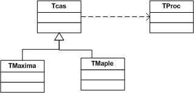
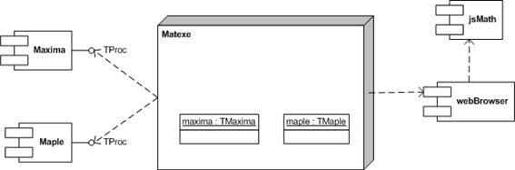

Como se puede observar en el diagrama de clases del siguiente apartado, el acceso al sistema CAS es encapsulado mediante la clase Maxima, descendiente de la clase CAS. Gracias a este diseño, es relativamente sencillo desarrollar nuevas subclases que encapsulen mecanismos de acceso a otro tipo de software CAS distinto al seleccionado (Maple, Mathematica, etc).

Evidentemente, los documentos desarrollados para un CAS concreto no podrán ser reutilizados directamente en otro, entre otras cosas, porque los lenguajes son diferentes. Sin embargo, la disponibilidad de otros sistemas de computación algebraica permitirá extender su utilización con usuarios que ya dominen dicho sistema.

En un futuro se prevé la posibilidad de extender el motor de cálculo simbólico (CAS) a otros paquetes de software como Maple o Axiom.
Created with the Personal Edition of HelpNDoc: Easy to use tool to create HTML Help files and Help web sites